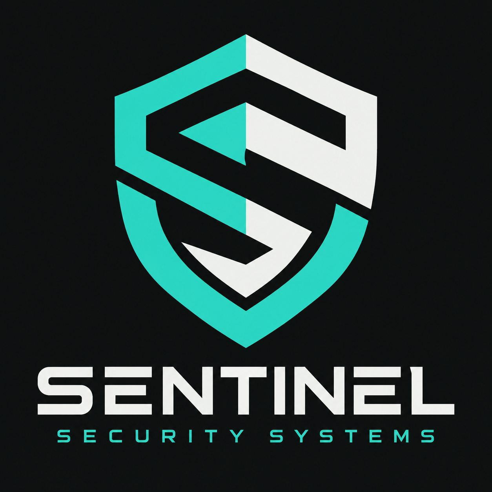

Security tooling
Practical utilities that help make system behaviour visible and security work easier to repeat.
OBSERVATION / AUTOMATION
SECURITY / SYSTEMS / RESEARCH
A place for security tooling, technical exploration and the work of understanding how systems behave.

01 / FOCUS AREAS
Start with the details.
Follow the evidence.
Practical utilities that help make system behaviour visible and security work easier to repeat.
Explore how software and networks work beneath the surface, including the assumptions they rely on.
Turn what we learn into clearer boundaries, better checks and more resilient systems.
02 / THE APPROACH
Good security work starts with a clear question and an honest account of what the evidence shows.
Look closely at the system, its inputs and its boundaries.
Trace behaviour to its cause. Document the assumptions and limitations.
Make a focused change, then check that it does what it should.
03 / FOLLOW THE WORK
Explore the Sentinel Security Systems GitHub for published code and future updates.
OUR STANDARD
Understand what you're building.
Question what you're trusting.